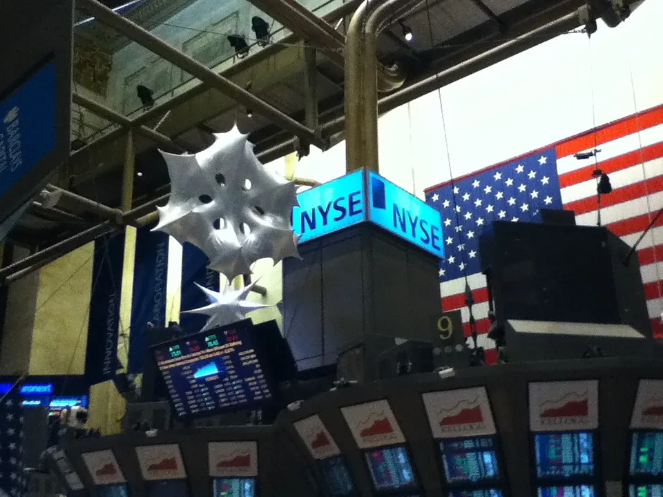
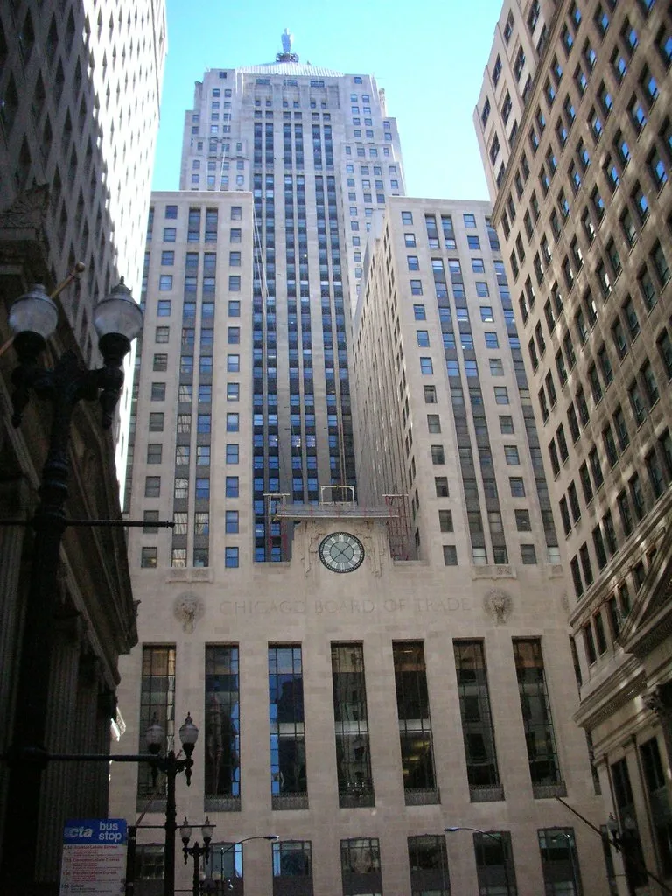

5일 코스피가 개장과 동시에 급락했다. 이날 코스피는 전 거래일보다 103.71포인트(1.82%) 내린 5580.09로 출발했고, 개장 직후 하락폭이 더 커지면서 오전 한때 3%대 넘게 밀려 5500선 아래로 내려앉는 등 불안한 흐름을 보였다. 오전 9시를 넘기면서도 지수는 쉽게 방향을 잡지 못한 채 등락을 반복했고, 특히 시가총액 상위 반도체 대형주들의 낙폭이 두드러지며 지수 하락을 주도했다.
하락의 직접적인 계기는 간밤 미국 뉴욕증시에서 번진 반도체주 약세였다. 필라델피아 반도체지수가 큰 폭으로 떨어지며 국내 증시 개장 전부터 투자심리를 위축시켰고, 이 여파가 그대로 국내 반도체 대형주로 옮겨붙었다는 분석이 나온다. 전날까지 꾸준한 상승 흐름을 이어오던 터라 투자자들이 느낀 충격은 더 컸다.

종목별로는 SK하이닉스가 6%대 급락하며 130만 원대까지 밀려났고, 삼성전자도 장중 2~3%대 하락세를 보였다. 두 종목의 동반 약세는 지수 전체에 큰 영향을 미쳤는데, 코스피 시가총액에서 두 회사가 차지하는 비중이 워낙 크기 때문이다. 반도체 소재·부품·장비(소부장) 관련주들의 낙폭은 더 컸다. 주성엔지니어링이 7%대 넘게 떨어졌고, 심텍과 이오테크닉스는 각각 10%대 넘는 급락세를 보이며 투자자들의 불안감을 키웠다.
이번 급락의 배경에는 전날 치러진 미국 중간선거 결과가 자리하고 있다. 선거에서 민주당이 연방 상·하원 권력을 모두 가져가는 '블루 웨이브'를 넘어 '블루 쓰나미'로 불릴 만한 압승을 거뒀는데, 이는 2006년 이후 20년 만에 야당이 상·하원을 동시에 탈환한 결과다. 민주당은 하원에서 다수당 기준인 218석을 훌쩍 넘는 최소 224석을 확보했고, 상원에서도 과반인 51석을 넘어서는 54석을 가져갔다.

특히 텍사스·조지아·오하이오·아이오와·사우스캐롤라이나·노스캐롤라이나 등 전통적인 공화당 강세 지역에서조차 민주당이 잇따라 이변을 연출한 점이 시장에 충격을 줬다. 캔자스에서는 무려 94년 만에 민주당 상원의원이 배출되기도 했다. 시장에서는 민주당이 의회를 장악하면 대형 AI 데이터센터 건설과 신규 승인에 대한 규제가 강화될 수 있다는 우려가 빠르게 확산됐다.
AI 데이터센터 건설이 지연되거나 규제 장벽에 부딪히면, 여기에 들어가는 고대역폭메모리(HBM) 등 반도체 수요 성장세도 함께 둔화할 수 있다는 걱정이 투자자들 사이에서 커지고 있다. 그동안 코스피 반도체 대형주들의 주가를 견인해온 핵심 동력이 바로 AI 인프라 투자 확대였던 만큼, 그 전제가 흔들릴 수 있다는 불안이 이날 급락의 근본 원인으로 지목된다. 엔비디아 등 글로벌 빅테크들의 투자 계획에 조금이라도 변화가 생기면, 그 영향이 국내 메모리 기업들의 실적 전망으로 곧바로 옮겨붙는 구조가 이번 급락에서도 고스란히 드러났다는 평가다.
증권가에서는 이번 하락이 선거 결과에 대한 단기적인 과민반응일 수 있다는 시각과, 실제 정책 변화로 이어질 경우 상당 기간 증시에 부담을 줄 수 있다는 신중한 시각이 함께 나온다. 당분간은 미국 새 의회의 구체적인 입법 움직임과 글로벌 반도체 기업들의 추가 실적·투자 계획 발표가 국내 증시의 방향을 좌우할 핵심 변수가 될 것으로 보인다. 코스닥 역시 코스피와 비슷하게 약세로 출발하며 중소형 반도체 관련주들이 동반 하락하는 모습을 보였다. 투자자들은 변동성이 커진 장세에서 신중한 대응이 필요하다는 조언에 귀를 기울이고 있다.